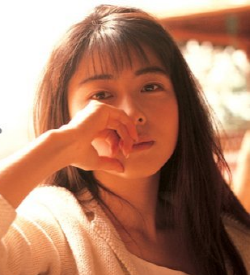

일본의 가수. 1990년대~2000년대 J-POP을 대표한 소프트 락 밴드인 ZARD의 메인 보컬. 활동 후반부에 들어서며 사카이 이즈미 본인을 ZARD라고 부르게 되었는데, ZARD는 원래 밴드로 시작하였지만 데뷔 2년만에 사카이 이즈미를 제외한 모든 멤버들이 탈퇴해 1인 밴드가 되어 밴드 이름이 활동명이 되었기 때문이다.

ZARD는 수많은 곡을 발표했지만 그 중에서도 대표곡인 '負けないで(지지 말아요)'는 오리콘차트 밀리언셀러로 등극하며 코시엔 입장곡과 한신 타이거즈의 응원곡으로 쓰이기도 한다. 또한, 소학교(초등학교) 음악 교과서와 고등학교 영어 교과서에까지 실렸다. 이 곡은 10년 뒤 '지지마'라는 제목으로 한국 드라마 반올림의 주제가로 번안되기도 하였다.